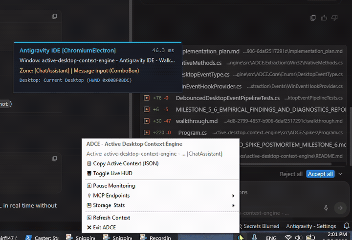
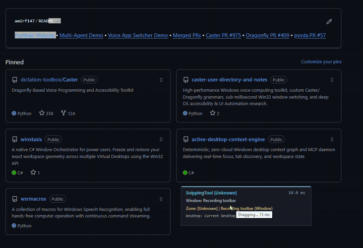

Passion Projects
-
Active Desktop Context Engine (ADCE) - Local Context Graph & MCP Provider for AI & Voice (opens in a new tab)
Active (with Real-World Use Case; see links below).NET 10 (C#) Win32 API / PInvoke FlaUI.UIA3 SQLite WAL Model Context Protocol (MCP) Single-Threaded Apartment (STA) Per-Monitor V2 DPIWindows background daemon and Model Context Protocol (MCP) server providing real-time desktop topology, active window envelopes, Virtual Desktop GUIDs, and container-aware tab extraction in under 15 ms with 0.0% idle CPU.
- Dual-Engine Topology: Sub-millisecond Win32 shallow gating (< 0.5 ms) paired with FlaUI.UIA3 batch caching to replace CPU-heavy OCR screenshot polling.
- Real-World Downstream Integration: Streams live UI focus zones to Caster Voice OS to enable dynamic IDE terminal voice grammars with zero speech engine audio latency.
- Browser Extraction: Container-aware tab and URL extraction with strict DOM tree pruning (10.17 ms for 30 tabs) without browser extensions.
- Time-Series Store: Embedded SQLite WAL database recording window state transitions for temporal agent reasoning.
- System Tray Host: Per-Monitor V2 DPI-aware host with non-activating live DevTools HUD overlay (
WS_EX_NOACTIVATE | WS_EX_TOPMOST).
View GitHub Repository (opens in a new tab) View Real-World Use Case: Caster Dynamic IDE Grammars (opens in a new tab) View 5-Project Architecture Spec (opens in a new tab) View Empirical Telemetry Benchmarks (opens in a new tab)
System Tray Host & Non-Activating Live DevTools HUD
Zero DOM Crawling: Sub-15ms Browser Tab & URL Extraction -
Caster Voice OS - Personal Hands-Free Platform (2-Year Git Evolution) (opens timeline page)
Active / ProductionPython 3 Caster / Dragonfly Kaldi ASR Win32 API AutoHotkey v2 XML-RPC / Sockets Git (960+ Commits)A 27-month, 969-commit personal voice computing operating system enabling hands-free programming, terminal navigation, and desktop orchestration.
- 3-Tier Window Switcher: Deterministic OS focus engine with Win32 thread attach, Taskbar UIA fallback, and synthetic keystroke routing.
- Kaldi ASR Engine Patches: Resolved compiler race conditions and memory leaks during deferred grammar reloads.
- Multimodal IPC: Integrated Olympus RS31H foot pedal controls via AutoHotkey v2 and thread-safe XML-RPC bridges.
- CCR Language Grammars: Modular command suites for Python, C#, PowerShell, Git, and AI IDE workflows (Windsurf, Cursor).
Explore Interactive 2-Year Timeline Web App (opens timeline page) View GitHub Repository (opens in a new tab) View Canonical Repository Brain Docs (opens in a new tab)Era 1 (May–Aug 2024) Kaldi ASR migration, Talon phonetic alphabet, modular rule hierarchyEra 2 (Sep–Dec 2024) Desktop automation (Office/VSCodium), privacy boundaries, language CCREra 3 (Jan–Nov 2025) Grammar maturation, AI IDE workflows (Cursor/Windsurf), RS31H foot pedal AHK v2Era 4 (May–Aug 2026) 3-tier failsafe window switcher, empirical COM telemetry, Kaldi race fix, Brain docs
Engineering Solutions
-
Python Microsoft AI Foundry Azure Speech Services Google Gemini SDK Agentic Orchestration AsyncIO REST API
Multi-agent orchestration middleware connecting private Azure cloud infrastructure, Microsoft AI Foundry, and Azure Speech Services with the Google Gemini SDK ecosystem.
- Cross-Vendor Orchestration: Custom Python middleware managing concurrent execution across independent LLM agent processes.
- Speech & AI Integration: Synthesized multimodal agent reasoning using Microsoft AI Foundry models and Azure Speech Services.
- Context Synchronization: Shared state store coordinating multi-step planning, task delegation, and execution logging.
- Live Telemetry: Real-time event streaming and execution monitoring across cloud endpoints.
-
Python Win32 API / User32 UI Automation (UIA) Virtual Desktop API Dragonfly Process Handles
Low-level Windows desktop focus management and voice window switching engine for the Caster and Dragonfly speech recognition frameworks.
- 3-Tier Failsafe Architecture: Primary
AttachThreadInput+SetForegroundWindowWin32 API bypass, secondary Taskbar UIA automation, and tertiary synthetic keystroke dispatch. - Virtual Desktop Filtering: Interfaces with Windows Virtual Desktop APIs to filter application targets by active workspace.
- In-App Tab Cycling: Direct voice commands to switch between open tabs across browsers and code editors.
- 3-Tier Failsafe Architecture: Primary
Open Source Contributions
-
Open Source Python Grammar Compilers pyvda / COM Thread Synchronization Upstream Merged
Upstream contributions merged into Caster, an open-source voice dictation and accessibility platform.
- PR #975 (opens in a new tab) (Numeric Engine Refactor): Rebuilt number grammar rules using
NumberRef, resolving Caster Issue #938 (opens in a new tab) and Issue #857 (opens in a new tab) to remove the legacy 4-digit dictation ceiling. - PR #965 (opens in a new tab) (HUD Startup Synchronization): Added polling retry logic to resolve thread initialization race conditions during startup.
- PR #962 (opens in a new tab) (Parser Corrections): Fixed title-case contraction and possessive casing bugs in continuous dictation output.
- PR #960 (opens in a new tab) (Windows 11 Desktops): Restored virtual desktop voice navigation by integrating updated pyvda COM interfaces.
- PR #975 (opens in a new tab) (Numeric Engine Refactor): Rebuilt number grammar rules using
-
Dragonfly Framework - Fix Number Series Sequence Matching & Limits (PR #409) (opens in a new tab)
Open PR #409Speech Recognition Engine Python Dragonfly Core AST Parsing Regression TestingUpstream patch resolving digit sequence matching conflicts, arbitrary length boundaries, and formatting loss in Dragonfly's core Number grammar class.
- Sequence Matching: Corrected greedy matching conflicts between single digits, compound numbers, and formatted number strings.
- Unbounded Digit Sequences: Removed hardcoded length restrictions to support arbitrary numeric input across speech engines.
- Zero Formatting & Upstream Link: Preserved leading and embedded zeros across speech backends, unblocking Caster Issue #938 (opens in a new tab) and Issue #857 (opens in a new tab).
-
Dragonfly Framework - Fix Kaldi Deferred Mid-Phrase Reload Bug (PR #408) (opens in a new tab)
Open PR #408Kaldi ASR Python Race Condition Patch State Management Exception HandlingEngine patch fixing fatal
KaldiErrorcrashes during deferred mid-phrase grammar reloads.- Root Cause Fix: Captured stale rules scheduled for destruction at deferral time rather than querying modified global dictionaries post-phrase.
- State Isolation: Prevented the Kaldi grammar compiler from attempting to unload newly compiled replacement rules.
- Caster Stability: Resolves Caster Issue #943 (opens in a new tab), eliminating fatal process crashes during background rule compilation while user speech is in progress.
-
pyvda - Handle Stale COM Objects & RPC Server Unavailability (PR #57) (opens in a new tab)
Open PR #57COM Interop Python Windows Internal APIs RPC Server Management Ctypes / ComtypesStability patch for pyvda (Python Windows Virtual Desktop API) to recover from destroyed COM interface pointers and RPC server unavailability.
- Explorer Restart Resilience: Intercepts
RPC_S_SERVER_UNAVAILABLE(0x800706BA) when Windows Explorer restarts. - Re-initialization Hook: Automatically re-binds the internal
IVirtualDesktopManagerInternalinterface on fault detection. - Sleep/Resume Protection: Prevents unhandled exceptions when systems resume from low-power sleep states.
- Explorer Restart Resilience: Intercepts


Publicly Released Tools
-
C# / .NET Win32 API Virtual Desktop API JSON Serialization CLI Utility
Standalone CLI utility to snapshot and restore window coordinates, dimensions, and virtual desktop assignments on Windows, permanently resolving application drift. Publicly featured on Tiny Tool Town.
- State Persistence: Serializes window geometry (X, Y, Width, Height, Z-order) and desktop GUIDs to JSON configuration files.
- Drift Correction: Restores multi-monitor window layouts following display disconnects, sleep cycles, or resolution changes.
- Process Filter: Ignores transient tooltips, invisible utility frames, and background daemon windows.
-
C# / .NET Win32 Console Desktop Topology Process Enumeration CLI Tool
Standalone CLI utility acting like 'ls' for Windows Virtual Desktops. Maps out all active virtual desktops and open application windows in a clean terminal table.
- Desktop Hierarchy: Traverses the active desktop array and prints a structured tree view to the terminal.
- Window Attributes: Reports window handle (HWND), executable process name, window title, coordinates, and bounding dimensions.
- Zero Overhead: Lightweight single-binary executable with sub-50 ms execution time.


Previous School & Applied Engineering Projects
-
Embedded Systems / IoT Raspberry Pi (Linux) Arduino (C++) UART Serial Bus Telegram Bot API InfluxDB & Grafana Sense HAT
Intelligent IoT physical mail detection and environmental monitoring system built with Raspberry Pi and Arduino communicating over a custom UART serial protocol.
- Vibration Sensing: 3-axis Sense HAT accelerometer mounted to the mail slot flap detects physical deliveries with zero false positives.
- Automated Capture: Triggers 12V LED illumination via Arduino serial command and captures 720p snapshots via Pi Camera.
- Alerting & Remote Control: Dispatches real-time photo alerts to Telegram and executes user commands via two-way Telegram bot.
- Telemetry Logging: Continuous time-series telemetry logging for door-state and environmental sensors to InfluxDB and Grafana.
-
IoT Battery Management System (BMS) (opens in a new tab)
🏆 Winner of Best Technical OutcomePower & Hardware Engineering Analog Devices LTC6811 Lithium-Titanate (LTO) Linduino (C++) SPI Bus Bluetooth SPP / SIM808 InfluxDB / PythonAward-winning Capstone Engineering project developed in collaboration with the TUAS e3power Research Group. Engineered an end-to-end IoT Battery Management System (BMS) testbench using a 4WD electric vehicle chassis powered by Lithium-Titanate (LTO) cells in a 2P4S pack.
- Battery Stack Monitoring: Integrated Analog Devices LTC6811 automotive multicell stack monitor to read individual cell voltages across 2P4S pack.
- Microcontroller Firmware: Wrote Linduino C++ firmware communicating over an isolated SPI bus with CRC validation.
- Wireless Gateway: Streamed live voltage data over Bluetooth SPP via SIM808 module to an edge Raspberry Pi.
- Analytics Dashboard: Automated InfluxDB storage and Grafana visualization to track cell degradation and imbalance during discharge cycles.
-
Autonomous Marine LiDAR & Environmental Sensor Array Evaluation
TUAS Maritime / Awake.ioAutonomous Robotics & Sensors Intel RealSense L515 Livox LiDAR Vaisala Weather Sensors ROS (Robot Operating System) RS-232 / RS-485 Serial Python (pyrealsense2)Evaluated, integrated, and bench-tested multi-spectral LiDAR and meteorological sensor arrays for autonomous maritime vessel collision avoidance.
- Sensor Evaluation: Bench-tested Intel RealSense L515 solid-state LiDAR and Livox MID-14/TELE-15 sensors under simulated maritime fog, rain, and ambient glare.
- Meteorological Integration: Connected Vaisala PTU-307 atmospheric transmitters and PWD-20 visibility sensors over RS-232/RS-485 serial.
- Point-Cloud Processing: Developed 3D point-cloud processing pipelines (.ply) using
pyrealsense2and ROS depth-streaming nodes on Raspberry Pi and GPU IPCs. - Data Logging: Serialized multi-sensor streams into structured diagnostic packets for collision avoidance validation.


-
5G & Cellular IoT Urban Environmental Telemetry Station
EU Horizon 2020 RESPONSECellular IoT / 5G Sensirion SPS30 Pycom GPy (ESP32) LTE-M / NB-IoT MicroPython Docker Compose InfluxDB / GrafanaEngineered, bench-tested, and deployed outdoor cellular IoT particulate matter monitoring stations for the City of Turku and Finnish Meteorological Institute (FMI).
- Optical PM Sensing: Integrated Sensirion SPS30 optical laser PM sensors measuring PM1.0, PM2.5, PM4, and PM10 mass concentrations.
- Cellular Microcontroller: Programmed Pycom GPy (ESP32 SoC + Sequans LTE-M/NB-IoT modem) with UART/I2C sensor drivers in MicroPython.
- Network Failover: Built local flash ring buffer to prevent data loss during network dropouts and engineered STUN/ICE NAT traversal diagnostic logging.
- Edge Compute & Pipeline: Deployed containerized Docker Compose microservices on Raspberry Pi 4 edge gateways with InfluxDB and Grafana.